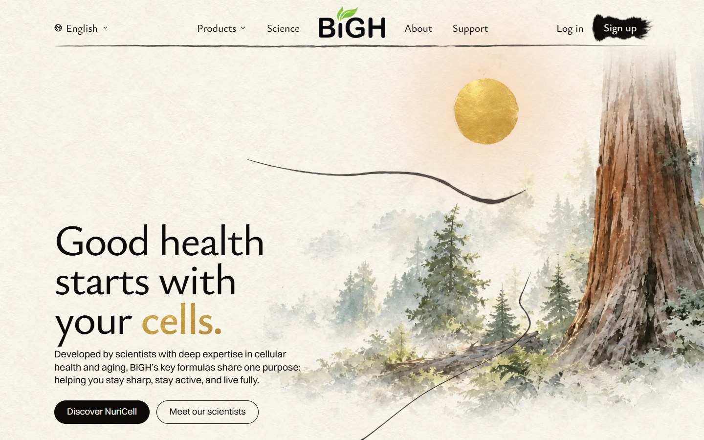
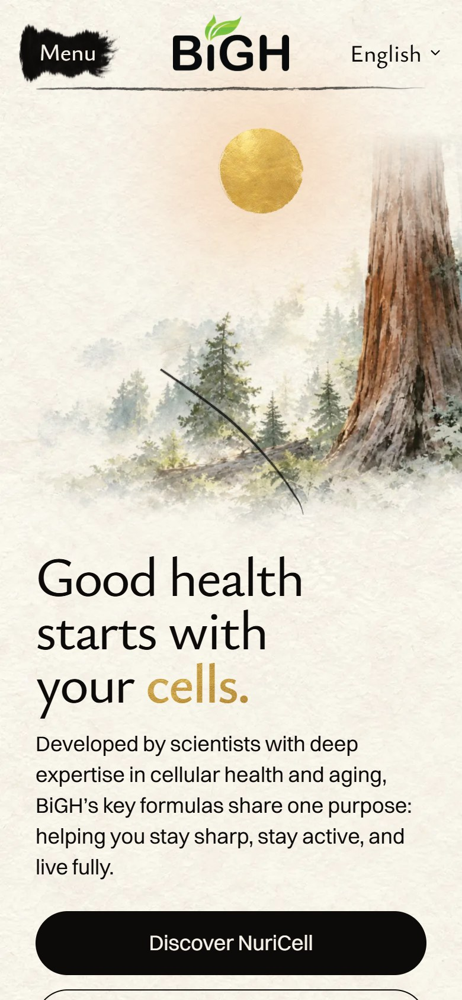

<title>Hummingbird Wings</title>
<meta name="claude:viewport-fit-sides" content="cover">
<link rel="preconnect" href="https://fonts.googleapis.com">
<link rel="preconnect" href="https://fonts.gstatic.com" crossorigin>
<link rel="stylesheet" href="https://fonts.googleapis.com/css2?family=Ysabeau:wght@500;650&display=swap">
<style>
  /* One column: the laptop screen, then the phone, each the built homepage with its bird laid
     back on it, wings timed as on the site. Play again restarts both. */
  :root {
    --paper: #f6f1e7; --ink: #1d1b18; --ink-soft: #5d574e; --rule: #ddd4c4; --gold: #a77c25;
    --title: "Ysabeau", "Palatino Linotype", Palatino, Georgia, serif;
    --body: system-ui, -apple-system, "Segoe UI", Roboto, sans-serif;
  }
  @media (prefers-color-scheme: dark) {
    :root:not([data-theme="light"]) { --paper: #1b1a17; --ink: #f1ece2; --ink-soft: #b9b0a2; --rule: #3a3630; --gold: #d6aa52; color-scheme: dark; }
  }
  :root[data-theme="dark"] { --paper: #1b1a17; --ink: #f1ece2; --ink-soft: #b9b0a2; --rule: #3a3630; --gold: #d6aa52; color-scheme: dark; }
  body { background: var(--paper); color: var(--ink); font: 17px/1.55 var(--body); margin: 0;
    padding-left: max(16px, env(safe-area-inset-left, 0px)); padding-right: max(16px, env(safe-area-inset-right, 0px)); }
  main { max-width: 1100px; margin: 0 auto; padding-block: 40px 72px; display: grid; gap: 28px; }
  h1 { font-family: var(--title); font-weight: 650; font-size: clamp(34px, 6vw, 52px); line-height: 1.05; margin: 0; letter-spacing: -0.01em; }
  p { margin: 0; max-width: 62ch; }
  .intro { display: grid; gap: 12px; }
  .intro p { color: var(--ink-soft); font-size: 18px; }
  .bar { display: flex; flex-wrap: wrap; gap: 12px 18px; align-items: center; position: sticky; top: 0; z-index: 2;
    background: var(--paper); padding-block: 10px; }
  button { font: 600 17px/1 var(--body); color: var(--paper); background: var(--ink); border: 0; border-radius: 999px; padding: 14px 22px; min-height: 48px; cursor: pointer; }
  .clock { font: 600 15px/1 var(--body); font-variant-numeric: tabular-nums; color: var(--ink-soft); }
  .shots { display: grid; grid-template-columns: 3fr 1fr; gap: 12px; align-items: start; }
  figure { margin: 0; display: grid; gap: 6px; min-width: 0; }
  figcaption { font-size: 13px; color: var(--ink-soft); }
  .scene { position: relative; overflow: hidden; border-radius: 6px; border: 1px solid var(--rule); background: #f4efe4; }
  .shot { position: absolute; inset: 0; width: 100%; height: 100%; display: block; }
  .bird { position: absolute; transform-origin: 62% 60%;
    animation: ride 6.5s ease-in-out infinite alternate, pitch 10.3s ease-in-out -3s infinite alternate; }
  .body { position: absolute; inset: 0; width: 100%; height: 100%; display: block; }
  .wing { position: absolute; background-size: 600% 100%; background-repeat: no-repeat; }
  /* The site's timing (opening.module.css), started when the bird starts to show. */
  .play .bird { animation: arrive 3s ease 0.6s both, ride 6.5s ease-in-out infinite alternate, pitch 10.3s ease-in-out -3s infinite alternate; }
  .play .wing { animation: beat 0.1s steps(6) 30, beat 0.16s steps(6) 3s 2, beat 0.24s steps(6) 3.32s 1; }
  @keyframes arrive { from { opacity: 0; } to { opacity: 1; } }
  @keyframes beat { from { background-position: 0 0; } to { background-position: 120% 0; } }
  @keyframes ride { from { translate: -0.15% 0.9%; } to { translate: 0.15% -0.9%; } }
  @keyframes pitch { from { rotate: 0.3deg; } to { rotate: -0.45deg; } }
  @media (max-width: 720px) {
    body { font-size: 16px; }
    main { padding-block: 24px 56px; }
    .shots { grid-template-columns: 1fr; }
    .phone { width: min(100%, 300px); justify-self: center; order: -1; }
  }
</style>

<main>
  <header class="intro">
    <h1>The hummingbird's wings</h1>
    <p>Your pick, A: the wings beat while the bird appears, slow down over three beats, then rest, raised as painted. About 3.5 seconds of beating, then still.</p>
    <p>Built on the real homepage, not live yet. If you scroll down before it finishes, the beat waits and finishes when you come back up.</p>
  </header>
  <div class="bar">
    <button type="button" id="again">Play again</button>
    <span class="clock" id="clock" aria-live="off"></span>
  </div>
  <div class="shots" id="shots">
    <figure>
      <div class="scene" style="aspect-ratio:1440/900" role="img" aria-label="The homepage on a laptop, the hummingbird's wings beating, then at rest">
        
        <div class="bird" style="left:24.6208%;top:17.2859%;width:22.1751%;height:23.7135%"><span class="wing" style="left:16.19%;top:14.174%;width:45.644%;height:76.931%;background-image:url(hummingbird-v2-far.webp)"></span><span class="wing" style="left:16.19%;top:14.174%;width:45.644%;height:76.931%;background-image:url(hummingbird-v2-near.webp)"></span></div>
      </div>
      <figcaption>Laptop, 1440 wide</figcaption>
    </figure>
    <figure class="phone">
      <div class="scene" style="aspect-ratio:390/844" role="img" aria-label="The homepage on a phone, the hummingbird's wings beating, then at rest">
        
        <div class="bird" style="left:4.4993%;top:21.1999%;width:63.7221%;height:19.6802%"><span class="wing" style="left:16.19%;top:14.174%;width:45.644%;height:76.931%;background-image:url(hummingbird-v2-far.webp)"></span><span class="wing" style="left:16.19%;top:14.174%;width:45.644%;height:76.931%;background-image:url(hummingbird-v2-near.webp)"></span></div>
      </div>
      <figcaption>Phone</figcaption>
    </figure>
  </div>
</main>
<script>
  const shots = document.getElementById("shots");
  const clock = document.getElementById("clock");
  let start = 0;
  function play() {
    shots.classList.remove("play");
    void shots.offsetWidth;
    shots.classList.add("play");
    start = performance.now();
  }
  function tick() {
    const t = (performance.now() - start) / 1000;
    clock.textContent = t < 3.6 ? "Beating… " + t.toFixed(1) + " s" : "At rest";
    requestAnimationFrame(tick);
  }
  document.getElementById("again").addEventListener("click", play);
  play();
  tick();
</script>
